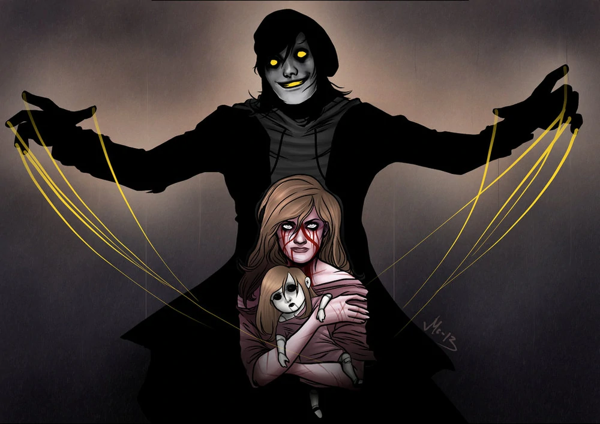

“Me llaman The Puppeteer
Mis dedos son delgados y mis manos
están manchadas con mis lágrimas
Por los títeres yo veo
con mis cuerdas y sueños”
~Canción de The Puppeteer.
Jonathan Blake era un chico con una gran fascinación con el mundo de los musicales y el teatro. Sin embargo, Jonathan pronto se convirtió en el hijo mayor de la familia, con un hermano menor y tres hermanas menores. Debido a que sus padres trabajaban en dos empleos para estabilizar a su gran familia, a menudo se quedaba con la responsabilidad de cuidar a sus hermanos durante los días, lo que lo llevó a ser como un padre para sus hermanos. Pero a medida que crecía, más parecía sentirse agotado.
Al llegar el primer año de secundaria, se unió a un Club de Teatro para invertir más en su interés por el drama y, por supuesto, para conocer a otros que compartían el mismo interés. Ahí fue donde conoció a Emra, que en muchos sentidos era su chica ideal. Sin embargo, los padres no estuvieron de acuerdo con la relación y le dijeron a Emra que si quería ir a la escuela de ballet para ser una bailarina profesional, tenía que romper con Jonathan, dejándolo solo y deprimido.
Con el paso del tiempo comenzaría a volverse cada vez más solitario y su depresión iba aumentando. Siendo consumido por su depresión y soledad, Jonathan tomó la decisión de ponerle fin a su miserable vida ahorcándose. Sin embargo, nunca pensó que volvería como un espíritu vengativo que se alimenta de la soledad y depresión de víctimas que son frágiles emocionalmente.

Poderes y Habilidades:
Fuerza y Resistencia Atléticas, Manipulación de los Hilos, Titeretismo Corporal (puede convertir a las personas en sus marionetas luego de asesinarlas), Inmortalidad (Tipo 6), Manipulación de la Percepción (puede causar alucinaciones a la víctima en el momento de asesinato. Para cualquier otro ojo externo, la muerte de la víctima se presentará como un suicidio), Inducción de Parálisis, Manipulación del Dolor (Puede causar que sus víctimas no sientan dolor).
Historia
Tuve esta muñeca durante bastante tiempo hasta ahora.
Era una hermosa muñeca de porcelana. Ya saben, parecida a las demás muñecas de porcelana; melena ondulada, largos rizos rubios, brillantes ojos negros. Tenía un vestido rojo con una cinta en los bordes. Era una muñeca que mi madre me regaló cuando era pequeña. A esa edad siempre pensé que era una bonita muñeca, que era perfecta. Mi abuela tenía casi cincuenta muñecas de ese tipo. Todas ellas hermosas, muñecas de porcelana perfectas. Pero esta en particular, la rubia con el vestido rojo, la voy a recordar siempre.
Debido a que esta es la que provocaría mi muerte.
Claro, mi compañera de cuarto era una buena persona, pero tal vez no tan habladora como yo esperaba. Yo no era una persona para sentarse tranquila en la habitación. Me gustaba salir, ver a mis amigos... Pero no tuve tiempo para amigos. Nadie quería hablar conmigo, sólo me dirigían la palabra si necesitaban ayuda o si mi compañera de piso había olvidado comprar leche.
La tarea era la única cosa para mantenerme distraída de sentirme sola. No tenía tiempo para intentar siquiera hacer amigas. Las amigas eran una tontería después de todo. Yo no tenía tiempo para ir y, tal vez, encontrar a alguien. Era inútil de cualquier manera y mi papá me degollaría viva si no mantenía mi enfoque en el trabajo escolar.
La única cosa que había traído de casa para recordar a mi familia era esa muñeca. La dejé en el escritorio frente a mi cama, sonriendo ante mí cuando necesitaba alguien con quien hablar o simplemente verme mientras dormía. Era yo y esa muñeca todo el tiempo. Esa fea muñeca de mierda.
Conforme pasó el tiempo, empecé a alejarme más y más de cualquier contacto humano posible. El trabajo escolar estaba por encima de todo y la preocupación comenzó a llenar mi mente. Pero yo no podía dejar de fumar y volver a casa, no después de que mis padres hayan pagado todo para mi universidad. Pensé que tenía que quedarme y dar lo mejor de mi. Realmente me traté mal. Pero la gente me odiaba cada vez más. Mi compañera de cuarto me despreciaba, lo sabía. Pero no la culpo. Yo estaba actuando como una idiota. Me negué a tomar mi parte de las tareas diarias -Limpiar el piso, sacar la basura...- Pero no podía hacerlo. Estaba siendo arrastrada a un agujero oscuro.
Y con la soledad llegó la paranoia.
Al principio acepté estar sola. Pero había llegado a ese punto en el que empecé a darme cuenta de mi comportamiento tonto, tratando de llegar a la gente entre a decirles que no me sentía bien. No era sólo el estrés y nadie tenía tiempo para hablar con una estudiante universitaria estúpida. Me encerré en mi habitación y no salí más. Tuve que enviar mi desuscripción de las clases a mis profesores, día tras día. Pero no importaba. Nunca les importé. Así que seguí dando vueltas en mi habitación, semanas y semanas. Era un círculo vicioso del que no podía salir.
Entonces sucedió. Mi habitación se volvió mi jaula. No comía, no podía. Incluso llegué al punto en el que mi compañera de cuarto venía a llamar a la puerta para ver que todo estaba bien. Pero no le abrí. Acabe gritándole en respuesta, a lo que ella se iba.
No le importaba lo suficiente como para hacer un segundo intento. Ella nunca llamó a mi puerta de nuevo. Era sólo yo. Yo y mi muñeca.
Luego llegó la noche
Esa noche.
Fue una noche que estaba tan desanimada como de costumbre. Sola. Ni siquiera me molesté en encender las luces. Cuando me levanté de la cama, me puse el suéter y un par de converse desatadas antes de salir de mi habitación en tantos días. Necesitaba aire fresco y mi ventana estaba rota, incapaz de abrirla. Fue en el medio de la noche, tal vez incluso ya era la mañana. Todavía estaba oscuro fuera, así que supuse que era todavía de noche a pesar de que no había comprobado el tiempo todavía. No podría importarme menos.
De todos modos, era complicado salir de la habitación y no despertar a mi estúpida compañera de piso. Todo lo que necesitaba era salir por un minuto o dos para tomar un poco de aire, y tal vez salir a comprar unos cigarrillos. Me había prometido a mí misma dejar de fumar, pero últimamente, era lo único que había estado haciendo. Fumar. Sólo me escapé a altas horas de la noche para ir a buscarme algunos cigarros. Era una cosa mala, lo sabía. Pero era la única cosa que me tenía en pie, me mantenía despierta y segura.
Pero esa noche en particular, había algo extraño. Alguien había abierto la puerta a la calle. No se me había ocurrido antes y pensé que al propietario le costó mucho mantener todo bajo llave todo el tiempo. No me molesto. Yo sólo tomé la pequeña caja roja de mi bolsillo y comencé a fumar. Lo bueno de la noche fue que no había nadie alrededor, nadie que me molestase con sus voces estúpidas. Era tranquila, tal vez sólo un coche que circula. Pero, no más que eso. Estaba tranquila.
Unos minutos después de ganar algo de frío en mi piel caliente y un poco de humo en el interior de mis pulmones, me decidí a ir de nuevo y tal vez tratar de ver un poco de televisión. Nada bueno se emitía en la noche, pero siempre valía la pena intentarlo.
Di un paso atrás en el edificio y me encogí de hombros, el último poco frío que no deseado de fuera, fue directo a colarse de nuevo en mi habitación. Pero tan pronto como llegué a la escalera, había algo en el camino. O, alguien. Alguien estaba de pie en las escaleras.
Tuve que admitir, que eso me asustó hasta cierto punto, pero un segundo después, estaba de vuelta en mi estado de "no me importa una mierda" y traté de subir las escaleras sin confrontar a la persona de pie en el camino. Al principio pensé que era mi compañera de cuarto, pero la sombra de la persona era demasiado... varonil. Demasiado grande para ser mi compañera.
Traté de pasar al extraño y con poco espacio encontré mi codo en el suyo. Pero él no se movió ni habló. Él se quedó allí. Me estaba asustando. El escenario era demasiado extraño. Pero, por supuesto, hubieron otros estudiantes en este edificio de apartamentos a la espera de asustar con mierda a algún que otro pobre estudiante de primer año. Pero yo no era de las que se dejan engañar.
Y no me detuve hasta que oí un sonido. Era uno de esos sonidos en los que sólo causa que la concentración la rompe de golpe. Era... hipnotizante. Asustadiza. Enervante. No podía seguir adelante, por lo que sólo me congelé y traté de dar la vuelta para mirarlo.
Al principio, hubo un crujido - el sonido que me había sorprendido. Luego estaba sollozando. La voz de un hombre joven sollozando. Pero no era humano. Tal vez si en algún grado. Pero la voz estaba yendo hacia arriba; Al igual que se rompía a través de una pantalla de televisión con mala estática. Me quedé a sólo unos pasos de distancia del hombre en la sombra. Quería romper mi estado de congelación repentina - Pero no pude. Me quedé atrapada, como si mis pies hubiesen sido clavados en la escalera.
Yo estaba tratando de hablar, pero él habló antes de que tuviera la oportunidad de hacerlo. Mi visión se estaba haciendo más clara ahora, ya que al pasar algo más de tiempo en la oscuridad, me ayudó para aclarar mi vista. Llevaba una especie de chaqueta negra. Todo negro. Una tapa de cosido, con cuerdas de caer fuera de un agujero en la parte posterior. También negro. Su pelo estaba cortado, pero largo; Como si no hubiera sido capaz de cortarselo por un tiempo... O haberse duchado.
Su aparición fue un empañamiento interior en mi mente, pero su voz apareció como una daga en mis oídos. Cuando habló, hizo otro ruido estático, como una radio rota. Pero habló con palabras. Traté de calmarme. Pero ya estaba demasiado asustada para tratar de resignarme a relajarme.
"Estás sola aquí, ¿No es así?"
Tragué saliva. El pensamiento de que alguien me espiaba todo este tiempo estaba llenando mi cabeza como incitándome al vómito, sentirse disgustada por este hombre y su voz. Sacudí la cabeza. No había respuesta. No podía darle una respuesta. Debería haberlo hecho. Tal vez habría cambiado toda esta situación para mejor. Tal vez yo no estaría aquí ahora, asustada por mi vida. Pero lo estaba. Y yo sabía que él también lo sabía.
Pero cuando yo no le di la respuesta que esperaba, se volvió hacia mí. Y delante de él fue uno de los rostros más terribles aún fascinantes que jamás había visto. Él no tenía cicatrices o heridas en todas formas para hacerme sentir incómoda por su apariencia.
Pero en sus ojos. Y su boca. Hubo un resplandor extraño. Un resplandor color naranja dorado. Llenó sus dos ojos y la boca, los dientes que brillan a través de una luz de color amarillo brillante. Brillaba en la oscuridad y se coló una luz a través de nosotros. En la escalera, el piso... En mí. Y pude ver su sonrisa en su rostro de pintura gris. Fue entonces cuando me rompí.
No era humano. Y tuve que escapar de allí.
Rompí a través de los lazos invisibles y me tiré por las escaleras, corrí rápidamente con mis zapatos desatados, me estrelle contra el suelo de madera. Huí de mi habitación sin ningún otro segundo pensamiento. Con suerte, mi compañera de habitación que yo había estado ignorando durante tantas semanas podría oírme. Y llamar a la policía.
Cerré la puerta tras de mí, mis pies me causaron tropiezo y me hicieron caer en dirección al mostrador; golpeando mi preciosa muñeca de familia, cayendo esta al suelo. La porcelana se rompió, grité del pánico, tratando de recordarme a mí y mis pensamientos. No hubo más ruido después de haber cerrado la puerta de mi habitación. Sin compañera de cuarto que venga después de mí, ningún hombre brillante extraño en la escalera. Sólo yo y mi muñeca rota; tirada en el suelo. Intenté gritar o llorar, llamar por cualquier ayuda en absoluto. No era real. Me estaba convirtiendo demasiado en una loca. Locura. Después de pasar tantos meses simplemente estando sola, esto es lo que había pasado. Yo estaba tirada en el suelo, roto y destrozado en pedazos. Ya no sabía qué creer.
Yo no pude dormir. Me senté en el suelo, que iba y venía arrastrándose lo mejor que pude. El cigarrillo de antes, ahora sólo se sentó como una aguja en mi garganta en el momento. Tuve sed, pero no podía salir a la cocina a beber nada. Tal vez él estaba allí. A la espera de que saliera. Pero yo no me movía de mi lugar. Nunca lo hice.
Pero una hora de completo silencio en la habitación, empecé a calmarme y ponerse de pie para tratar de tranquilizarme. Todavía había esa sensación de ser observada. Y yo sabía del sentimiento demasiado bien. La sensación de ser paranoica y solitaria todo se reducía a esto. Un desglose.
Una vez me acordé de la muñeca que se rompió; Inmediatamente me puse a tratar de remendar juntos. Era como la única cosa que tenía en el foco; Mi mejor amiga. La muñeca.
Me las arreglé para conseguir una aguja e hilo en mi habitación y un poco de cola para conseguir la muñeca de nuevo a su antigua gloria. Pero no fue fácil. No importa cuánto lo intentara, la muñeca sólo caería de nuevo juntos. Se convirtió en un intento sin fin de nada. Lo intenté de nuevo y otra vez. Pero simplemente caería en pedazos.
Mi única amiga.
Se me hizo muy cansado el pánico repentino y la fijación de la muñeca; Acaba de pasar en mi cama. Pero me acurruqué junto a una bola con la manta sobre mi cabeza, de alguna manera imaginar que ningún monstruo debajo de la cama podría llegar a mí ahora. Todo lo que quería era soñar demasiado.
Yo no sabía que iba a volver.
Esta vez fue diferente, sin embargo. Esta vez, me dio la bienvenida. Yo estaba cansada de correr todo el tiempo y prefería morir en mi sueño a enfrentarme a otro día de estar sola otra vez. Y ahora, con mi única amiga rota, ¿que se supone que debo hacer?
Fue agotador, la forma en que se acercó a mí esta vez. Era como si estuviera dormida, pero todavía podía controlar mi cuerpo. Como un sueño lúcido. No me atrevería a entrar en otro día. Esta noche, iba a terminar. Al igual que había tenido miedo de que lo haría. Pero no me importa nada. No te molestes. Yo sólo quería tener un largo sueño y nunca despertar de nuevo. Nunca frente a la soledad de nuevo.
Él volvió a mí. Con sus manos me guía desde mi cama, envolvió su mente alrededor de la mía mientras yo trataba de ver. Pero la única cosa que todavía podía ver eran sus manos grises, sosteniendo la mía apretado. Pero, de repente hubo una sensación de que no estaba segura de que podría sentir. De flotar.
Igual a un títere, cortó dos heridas abiertas en las muñecas. Pero no fue... al otro lado. Más como si fuera desde el centro de mi brazo y hacia abajo. llegó para algo. Músculos. Algo para pelar y colgar. Lo malo era; Le permití hacerlo. Mi lucha se había convertido en demasiado duro de llevar. Y con los pedazos largos de músculos colgando de los cortes en las muñecas, empezó a tirar de ellos. Tiró de ellos como si quisiera controlar mi cuerpo y los brazos, cómo todo se reunieron en reacción a mi sistema nervioso y el esqueleto. Sabía cómo funcionaba.
Sin embargo, no hubo dolor. No hay dolor que llenaba mi corazón o el cuerpo, sólo otro pedazo de mi mente al quedarse a gusto de nuevo. Fue una sensación maravillosa. Era como si nada más importara.
Y mientras seguía me corto abierto, comenzó a cantar: Me llaman el Titiritero
Mis dedos son delgados y mis manos están manchadas con mis lágrimas
Para los títeres dirijo con mis cuerdas y sueños. Ahora podía verlo más claro. El hombre que yo sólo había odiado con todas mis fuerzas, ahora me dio la bienvenida a acabar con mi sufrimiento eterno. ¿Tal vez había sido él quien me había obligado a esta forma de pensar? ¿Tal vez él era el culpable de todo lo que había hecho a mí misma? ¿Era esto todo en mi cabeza - ¿O era real?
Me llaman el Titiritero
No tenía amigos, igual que usted.
Para nadie vio el valor de mi amistad
Pero al final ellos llaman convirtieron en mis amigos
Con mis cuerdas y sueños.
Me tomó un minuto perder todo el sentido de mi tacto. Mi sistema nervioso había sido aplastado bajo la mano de este hombre - Esta cosa, rompió todos los huesos de mi cuerpo. Podía sentir como torcía mis costillas y retorcía los huesos de la cadera. Todo por él para que sea más fácil para él para convertirse en lo que él me vio apropiado para ser.
Era como las largas piezas de músculos desgarrados ya estaba cuerdas; El control de mis extremidades y la cabeza agitándose de un lado a otro. Todo lo que podía ver era su sonrisa, así que le devolví el gesto. Me llaman el Titiritero,
Mi cuerpo oscuro y mi ojos son el hambre del oro.
En mis ojos, nadie está solo.
Y con mis cuerdas y sueños, Usted será mi amigo también.
La última sensación que podía sentir era su mano tirando con fuerza alrededor de mi cuello. Entonces. Un chasquido. Al principio, tenía miedo de ver la muerte acercándose a mí de esta manera. Nunca lo había pensado de esa manera. Yo habría dicho que no y se negó, si pudiera haber decidido todo por mi cuenta. Pero no lo hice.
Le dije que sí.
Con el cuello roto, la muerte era sólo medio segundo de distancia. Entonces no había más que una sonrisa dorada y sus cálidas manos, sosteniendo mis cadenas cuando mi cuerpo cayó.
Temprano a la otra mañana, mi compañera de cuarto me encontró. Muerta. Tuve un suicidio por ahorcamiento a mí misma en el ventilador en el techo, asegurando mi muerte. Yo había saltado de la cama. Aparte de mí, era esa muñeca. La muñeca de porcelana rota con el vestido rojo y hermoso cabello rubio.
Usted se estará preguntando cómo estoy escribiendo esto para usted en este momento, o cómo encontré mi manera de contactar con usted. Me ha sido necesario escribir mi historia antes de que yo la transmitiera.
Este es mi legado, Esto es lo que estoy dejando atrás.
No podía soportar la soledad más. No podía pararse frente a los problemas en la mía. Nos llevó mucho tiempo. Demasiado tiempo.
Queridos mamá y papá.
Lo siento mucho.